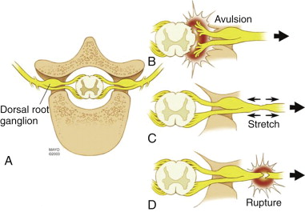

Notes on Peripheral Nerve Injuries
Approach to Management
What nerve is injured?
1. Nerve injuries defined by mechanism, degree of injury, and
affected nerve components.
- e.g. sharp or ragged laceration, non-penetrating (overstretching
or crushing), shock-wave from gunshot.
2. Determine site and extent by careful neuro exam
3. Degree of injury classified by Seddon Classification
Nerves are composed of myelin sheaths, axons, and supporting
connective tissues of endoneurium, perineurium and epineurium.
- injuries involve these components to variable degrees.
i) Neuropraxia: Myelin injured; Complete fast
recovery
ii) Axonotmesis: myelin, axon; Good slow recovery
- if endoneurium also injured, variable slow recovery; may need
surgery
- if perineurium also injured, no recovery, surgery needed.
iii) Neurotmesis: All above elements and epinerium; no
recovery, need surgery
Pathophysiology
1. When myelin only injured (neuropraxia), nerve problem is due
to a conduction block.
- myelin heals fast and recovery is generally achieved over days
- e.g. Saturday-night radial nerve palsy
2. When axon injured (axonotmesis), a portion remains proximally
attached to the cell body
- distal portion undergoes "Wallerian degeneration"
- proximal portion will attempt to sprout and grow at 1mm / day
--> if supporting tissues (endo, peri, epi) intact, then it will
reach its target and eventually neuromuscular junctions or sensory
receptors within months or years
--> depends on site of injury and distance; by 18-24m, the
neuromuscular junction has gone irreversible damage and function
will never recover.
3. If supporting elements are partly or wholly injured, then the
sprouting nerve will never reach its target
- this causes a neuroma
- surgery then required for return of function, then regeneration
can progress in the right direction at 1mm/day
--> must occur early to have best opportunity to meet target
before neuromuscular jx fails
--> some injuries like proximal ulnar nerve injury may never
recovery
--> however, note sensory receptors do not have a neuromuscular
junction, so sensory fx may still return
Treatment Options
- as below according to degree of injury
- or degree of nerve resected to treat a neuroma
Options
1. Observation
- if recovering partial nerve injury
2. Neurolysis
3. Direct repair
- lacerations;
4. Nerve graft
- Laceration with retracted stumps
5. Nerve transfer
- avulsions; e.g. brachial plexus injury
6. Nerve reimplantation
- investigational
Outcomes depends on
Speed of regeneration is 1mm/day; 1in/month
Degree of accompanying atrophy / neuromuscular junction regeneration
Availability of expertise and resources
Early window for achieving good results; refer and treat early.
Timing of Surgery (3+1 rule)
Early (3 days): lacerations; neurotmesis
Subacute (3 weeks): blunt / ragged transections; neurotmesis
Delayed (3 months): lesions-in-continuity; axonotmesis
Late (>1y): salvage procedures
Early Surgery
If a severed nerve not expected to recover, operate at d3
Direct nerve repair with end-end suturing
- use epineural vessels to align ends correctly
- place sutures in epineural tissue, interrupted fine anastomosis
Subacute repair
Treat at 3w to allow zone of injury to define by Wallerian
degeneration.
Some advocate early repair instead to prevent scarring
If nerve found in continuity but damaged, then just observe for
several months
Else resect nerve ends back to healthy tissues and repair
Delayed surgery
Non-operative if showing signs of recovery, else operative
- 90% of recoveries will happen within 3-4m
- can do nerve action potential testing to determine progress.
Late surgery
After 1y, reserved for late non-recovery, attempted salvage.
Surgical Approach
Preparation
Know the anatomy
Plan adequate and additional exposure
Plan harvest
Dissect between muscle groups
Preserve vascularity
Expose nerve segment, intact and pathological
Repair
Prepare ends
Employ microsurgery technique
Perform a tension-free repair
End to end or interposition grafting
Simpler = better
Fasicular alignment
Must align fascicles correctly; motor and sensory components.
Epineural alignment using vessels
Identify similar cross sectional topography
Can map motor and sensory components in specialist units if unsure.
Small Gap?
Mobilize nerve along track
Joint positioning (fix in flexion post-op then gradual extension)
Nerve transposition
Most frequent source is the sural nerve; 40cm long and and can
harvest bilaterally
Also antebrachial cutaneous nerves, great auricular nerve,
superficial radial sensory nerve
- need nerve gap +10% for tension free interposition repair; may
need several sections of sural nerve for one major nerve.
Associated with donor site sensory loss and small risk of chronic
nerve pain at donor site
Nerve transfer
Transfer of a fascicle of a working nerve to another nerve
- preferably a synergistic site
Used for brachial plexus avulsions
Complex; specialist territory
Brachial Plexus Injuries

B: avulsed directly at cord; preganglionic lesion
- spinal nerves cannot be used.
C: traumatic stretching
- nerve intact but degree of injury can be variable and severe; some
recover some do not
- if repair needed, grafting possible
D: rupture
- discontinuity; neurotmesis
- postganglionic; proximal nerve stump grafting.
Post-op
Restrict mobilisation for 3w
Can use Tinnel sign (tap and sense paraesthesia) for testing extent
of recovery
Continue physical therapy
Once reinnervation has begun, can sensory and motor exercises can
improve recovery.
Can need f/up involvement for several years to optimise function
outcome.
Neuroma-in-continuity
Record nerve action potentials to assess injury / recovery of nerve
If positive, neurolysis alone
If negative, surgical repair.
Outcomes
Highly variable depending on several factors.
Younger = better
Distal = better
Pure nerve = better (less fascicular mismatch)
Specific nerve important; radian > median > ulnar; C5/6 or
upper trunk > C8/T1 or lower trunk
Laceration = better than gunshots
Earlier = better
Simpler repair = better
High volume specialist = much better